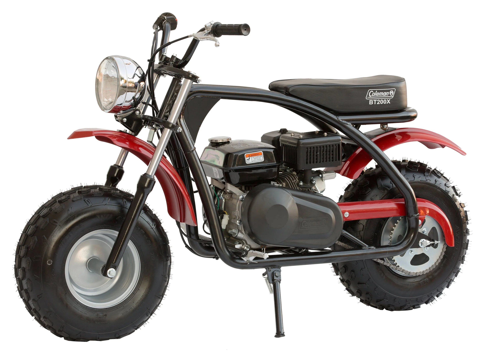

mini bikes are a very fun and symple way to get frome one place to another thay were also used in ww2 because of there small size and capibility. and in my opinon that is onr of the main reasons thya became so popular again is because thay are so simpel to work on and parts are very cost efective compaired to other options such as dirt bikes or quads .

In simplest terms, a minibike is a small one-passenger motorcycle that has raised handlebars and a low frame. They were developed alongside go-karts after World War II. Today, people enjoy minibikes for short trips around the block or zips across campsites.